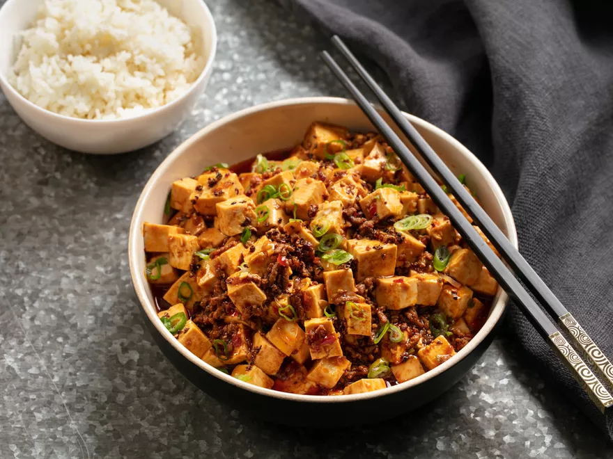

Mapo Tofu

Description
Mapo Tofu is a sichuan dish made with silky tofu and spicy chili oil. It has sichuan peppercorns that give that special numbing flavor.
Ingredients
- 16 ounces medium or medium-firm tofu (if unavailable, go with firm)
- 1 rounded teaspoon Sichuan peppercorns
- 3 tablespoons canola oil
- 6 ounces ground beef or pork (preferably 80 or 85 percent lean), roughly chopped to loosen
- 2 ½ to 3 tablespoons doubanjiang (fermented chile bean sauce or paste)
- 1 tablespoon douchi (fermented black beans, optional)
- 1 teaspoon minced fresh ginger
- ½ teaspoon red-pepper flakes (optional)
- 2 teaspoons regular soy sauce
- 1 rounded teaspoon granulated sugar, plus more if needed
- Fine sea salt
- 2 large scallions, trimmed and cut on a sharp bias into thin, 2-inch-long pieces
- 1 ½ tablespoons cornstarch dissolved in 3 tablespoons water
- Cooked white rice, for serving
-
Prepare the tofu: Cut the tofu into 3/4-inch cubes and put into a bowl. Bring a kettle of water to a rolling boil. Turn off the heat and when the boiling subsides, pour hot water over the tofu to cover. Set aside for 15 minutes.
-
Meanwhile, in a large (14-inch) wok or (12-inch) skillet over medium heat, toast the peppercorns for 2 to 3 minutes, until super fragrant and slightly darkened. (A wisp of smoke is normal.) Let cool briefly, then pound with a mortar and pestle, or pulse in a spice grinder.
-
Set a strainer over a measuring cup, then add the tofu to drain; reserve 1 1/2 cups of the soaking water, discarding the rest. Set the tofu and reserved soaking water near the stove with the peppercorns and other prepped ingredients for swift cooking.
-
Reheat the wok or skillet over high. When hot — you can flick water in and it should sizzle and evaporate within seconds — swirl in the oil to evenly coat, then add the meat. Stir and mash into cooked and crumbly pieces, 1 to 2 minutes.
-
Add 2 1/2 tablespoons doubanjiang, the douchi (if using), ginger and red-pepper flakes (if using). Cook about 2 minutes longer, stirring constantly, until things are vivid reddish brown. Add the soy sauce and sugar, stir to combine, then add the tofu. Gently stir or shake the pan to combine the ingredients without breaking up the tofu much.
-
Add the reserved 1 1/2 cups soaking water, bring to a vigorous simmer, and cook for about 3 minutes, agitating the pan occasionally, to let the tofu absorb the flavors of the sauce.
-
Slightly lower the heat and taste the sauce. If needed, add the remaining 1/2 tablespoon of doubanjiang for heat, a pinch of salt for savoriness, or a sprinkle of sugar to tame heat.
-
Add the scallions and stir to combine. Stir in the cornstarch slurry, then stir in enough to the mapo tofu to thicken to a soupy rather than a gravy-like finish. Sprinkle in the ground peppercorns, give the mixture one last stir to incorporate, then transfer to a shallow bowl. Serve immediately with lots of hot rice.